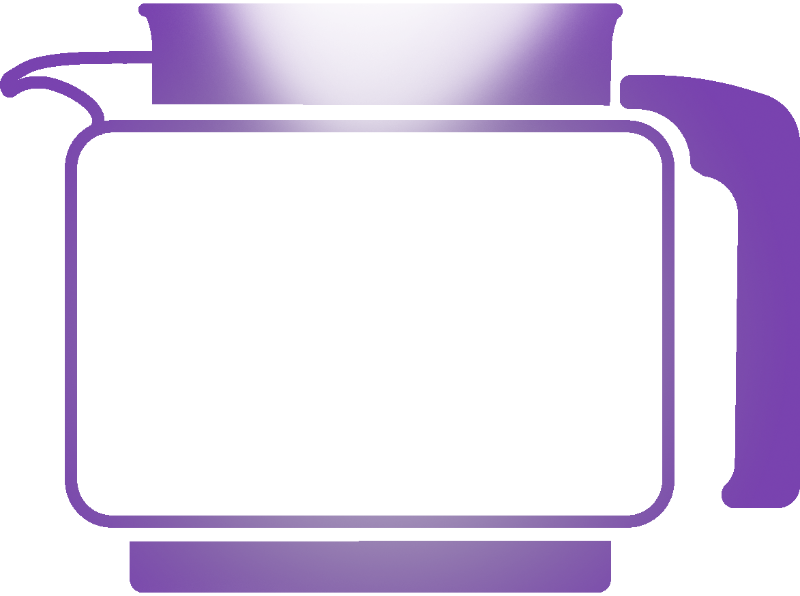
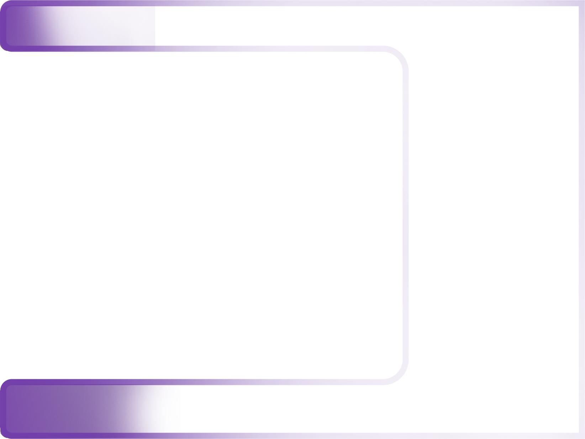

<!--<div class="container">-->
<!--<div class="row">-->
<!--<div class="col coffee position-absolute" [@visibilityChanged] *ngIf="potId===0">-->
<!--<div [@move]="state" (@move.done)="onEnd($event)" class="wave">-->
<!--&lt;!&ndash;&ndash;&gt;-->
<!--</div>-->
<!--Coffee pot {{ pots[0].id }} says {{ pots[0].status }}%-->
<!--</div>-->
<!--<div class="col box position-absolute" [@visibilityChanged] *ngIf="potId===1">-->
<!--<div [@move]="state" (@move.done)="onEnd($event)" class="wave">-->
<!--&lt;!&ndash;&ndash;&gt;-->
<!--</div>-->
<!--Coffee pot {{ pots[1].id }} says {{ pots[1].status }}%-->
<!--</div>-->

<!--<div class="row">-->
<!--<div class="col-11">-->
<!--<button type="button" class="btn btn-info" (click)="switch()">-->
<!--&gt;-->
<!--</button>-->
<!--</div>-->
<!--</div>-->
<!--</div>-->
<!--</div>-->


<div class="container">
    <div class="row">
        <!--<div class="col">-->
            
        <!--</div>-->
        <!--<div class="col offset-md-4">-->
            
        <!--</div>-->
    </div>
</div>
<!--<div class="row">-->
    <!--<div class="col-xs-12 col-sm-6 col-md-3 project">-->
            <!--<div class="parent">-->

                <!--<div class="fa fa-plus project-overlay">-->

                    <!---->
                    <!---->
                <!--</div>-->
            <!--</div>-->
    <!--</div>-->
<!--</div>-->
<!--<circle-progress-->
        <!--[percent]="85"-->
        <!--[radius]="100"-->
        <!--[outerStrokeWidth]="16"-->
        <!--[innerStrokeWidth]="8"-->
        <!--[outerStrokeColor]="'#c0663a'"-->
        <!--[animation]="true"-->
        <!--[animationDuration]="300"-->
<!--&gt;</circle-progress>-->